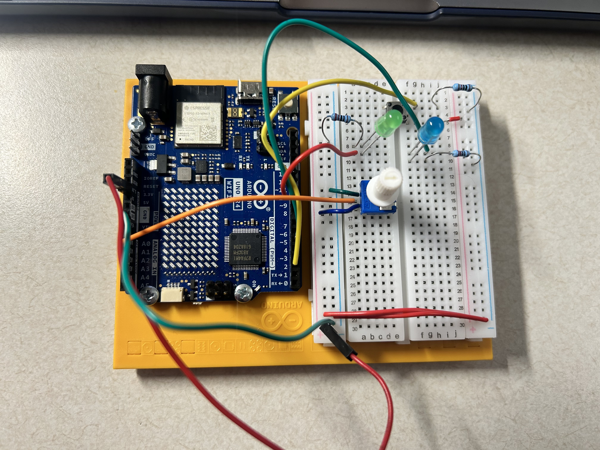
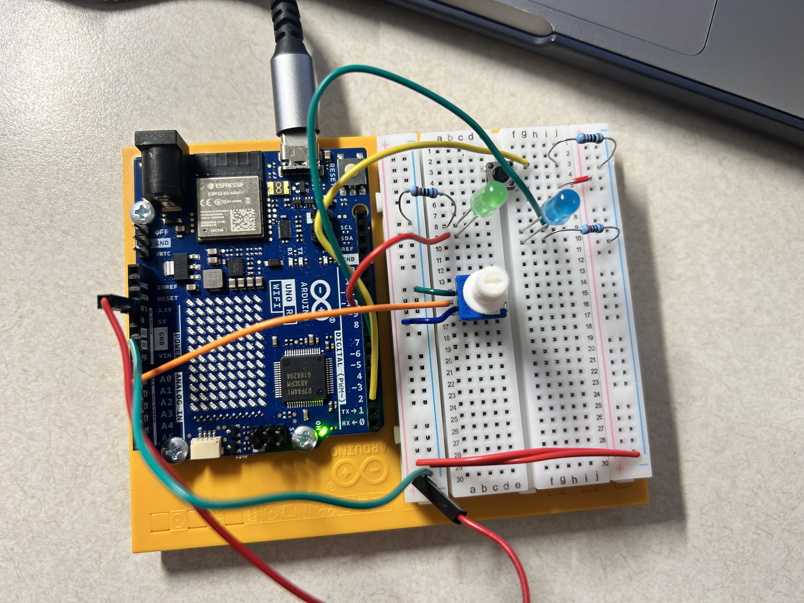
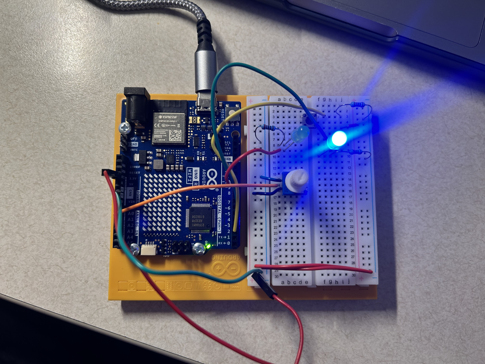
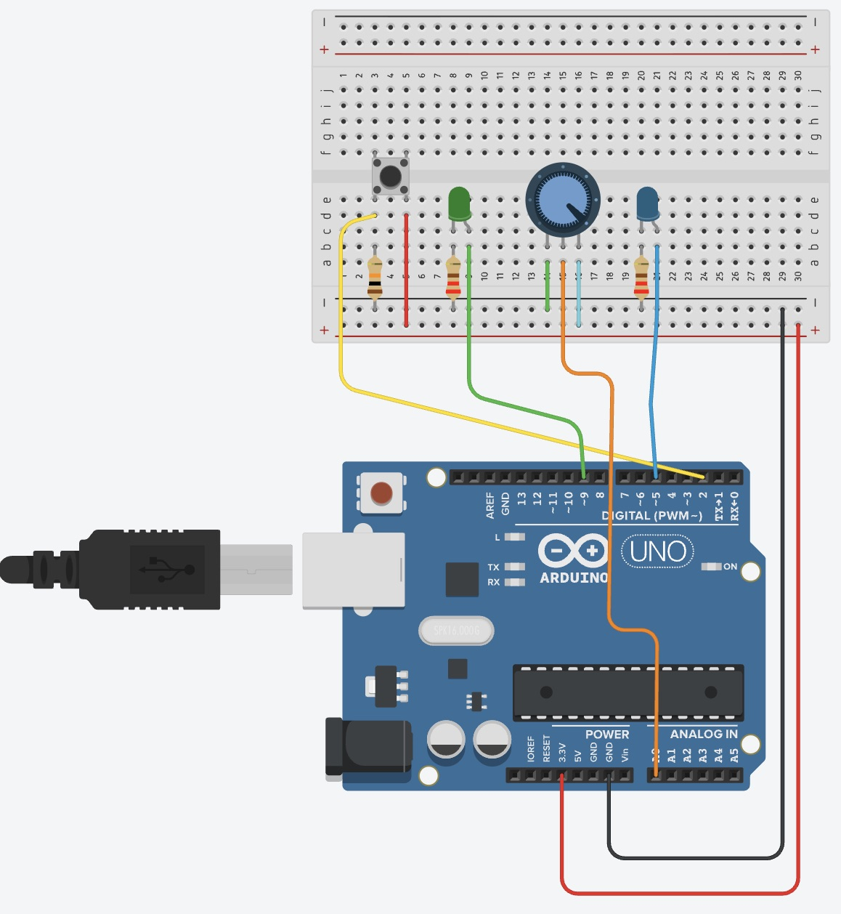

Two-Input LED Control — Physical Computing Journal
Experience Goal
For this project, I wanted to create an interaction using two physical inputs and two LED outputs. My goal was to have the controls work together rather than having each input operate completely independently. The potentiometer controls the brightness of the blue LED to represent an adjustable power level, while the pushbutton controls the green LED. However, the green LED can only be activated when the potentiometer has reached at least half power. This creates a simple system where the user must first provide enough power before the second control can be activated.
How It Works
The circuit uses a potentiometer and pushbutton as its two inputs and a blue and green LED as its two outputs. As the potentiometer is turned, the brightness of the blue LED gradually increases or decreases. This provides visual feedback for the current power level.
The pushbutton controls the green LED, but its behavior also depends on the potentiometer. If the button is pressed while the potentiometer is below halfway, the green LED remains off. Once the potentiometer reaches at least halfway, pressing the button turns the green LED on. Releasing the button turns it off again. This allows both inputs to contribute to the overall interaction.
Building and Testing
I began with the circuit I had built while following the class exercises, at the point where I had added the second green LED. This gave me a starting setup with the components I needed to continue experimenting with multiple inputs and outputs. From there, I adjusted the circuit so that I was working with a potentiometer and pushbutton as the two inputs and a blue and green LED as the two outputs.
I first programmed the potentiometer to control the brightness of the blue LED. The analog value from the potentiometer is mapped to the LED's brightness range, allowing the light to gradually become brighter or dimmer as the knob is turned. I then programmed the pushbutton to control the green LED. After confirming that both controls worked separately, I changed the interaction so that the green LED could only turn on when the button was pressed and the potentiometer was at least halfway up.
Issues and Discoveries
One discovery I made while programming the interaction was that the two inputs did not have to control the LEDs independently. At first, I tested the potentiometer and pushbutton separately: the potentiometer changed the brightness of the blue LED, while holding the pushbutton turned on the green LED. Once both parts were working, I was able to combine their values so that the pushbutton would only activate the green LED when the potentiometer had reached at least half power.
I also recreated the circuit in Tinkercad to document the final wiring. The potentiometer and blue LED behaved as expected in the simulation, although I had some difficulty getting the green LED and pushbutton interaction to behave the same way as the physical circuit. Since the physical circuit worked correctly, I used the Tinkercad circuit to document the intended connections while using the physical Arduino for my final testing and results.
Process & Result
I documented the circuit as I developed and tested the interaction. The process began with the circuit from the class exercises and continued as I tested the potentiometer and pushbutton with the two LEDs. The final photos show how the circuit responds at different potentiometer levels and demonstrate when the green LED can be activated.
Starting Circuit
I began with the circuit from the class exercises and used it as the starting point for this project. From this setup, I continued working with the potentiometer, pushbutton, and two LEDs to develop the final interaction.

Low Power
With the potentiometer turned down, the blue LED is at its lowest brightness. At this level, pressing the pushbutton will not activate the green LED because the potentiometer has not yet reached the required halfway point.

Activation Point
Once the potentiometer reaches at least halfway, the pushbutton can activate the green LED. In this photo, the blue LED shows the current power level while I press the button to turn on the green LED.

High Power
With the potentiometer turned higher, the blue LED reaches a much brighter level. This shows how the potentiometer provides continuous control over the blue LED rather than simply turning it on or off.

Circuit Diagram
I recreated the circuit in Tinkercad to show the connections between the Arduino, breadboard, two inputs, and two LED outputs.

Final Code
The final program reads the potentiometer and pushbutton as inputs. The potentiometer value is mapped to the PWM brightness range for the blue LED. The program also checks whether the button is pressed and whether the potentiometer has reached at least halfway before turning on the green LED.
// input controls
const int knobPin = A0;
const int buttonPin = 2;
// LED output pins
const int blueLedPin = 5;
const int greenLedPin = 9;
void setup() {
// set the button as an input
pinMode(buttonPin, INPUT);
// set the LEDs as outputs
pinMode(blueLedPin, OUTPUT);
pinMode(greenLedPin, OUTPUT);
}
void loop() {
// read the potentiometer
int knobValue = analogRead(knobPin);
// read the pushbutton
int buttonState = digitalRead(buttonPin);
// convert the potentiometer range to an LED brightness range
int blueBrightness = map(knobValue, 0, 1023, 0, 255);
// use the potentiometer to control the blue LED brightness
analogWrite(blueLedPin, blueBrightness);
// activate the green LED only when the button is pressed
// and the power level is at least halfway up
if (buttonState == HIGH && knobValue >= 512) {
digitalWrite(greenLedPin, HIGH);
} else {
digitalWrite(greenLedPin, LOW);
}
}References
- IGME 470 class slides and in-class circuit exercises
- Arduino Language Reference
- Tinkercad — used to recreate and document the circuit diagram